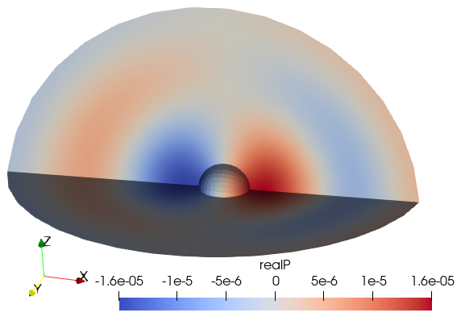

Moving sphere in an infinite fluid
Description
A rigid sphere in an infinite volume of fluid accelerates alternately in the positive and negative x-direction, generating positive pressure ahead of it, negative pressure behind. Time-dependent simulation. Described in [1].
References
[1] Krysl P, Hawkins AD, Schilt C, Cranford TW (2012): Angular Oscillation of Solid Scatterers in Response to Progressive Planar Acoustic Waves: Do Fish Otoliths Rock?. PLOS ONE 7(8): e42591. https://doi.org/10.1371/journal.pone.0042591

Goals
- Show how to generate hexahedral mesh, mirroring and merging together parts.
- Execute transient simulation by the trapezoidal-rule time stepping of [1].
#Definitions
The finite element code relies on the basic functionality implemented in this package.
using FinEtoolsThe acoustics functionality is brought in:
using FinEtoolsAcousticsWe shall need some facilities from the linear algebra package
using LinearAlgebraThe properties correspond roughly to air.
rho = 1.21*phun("kg/m^3");# mass density
c = 343.0*phun("m/s");# sound speed
bulk = c^2*rho;
a_amplitude=1.0*phun("mm/s^2");# amplitude of the acceleration of the sphere
R = 50.0*phun("mm"); # radius of the interior sphere
Ro = 8*R # radius of the external sphere, where the fluid doing this truncated
P_amplitude = R*rho*a_amplitude; # pressure amplitude
frequency = 1200.; # # frequency of the incident wave, Hz
omega = 2*pi*frequency;
dt = 1.0/frequency/20;
tfinal = 90*dt;
nsteps = round(tfinal/dt)+1;This dictates the parameters of the mesh.
nref = 2;
nlayers = 40;
tolerance = Ro/(nlayers)/100Hexahedral mesh: Generate 1/8 of the scattering sphere. This sphere is not actually part of the model, it just serves as an intermediate step from which the volume of the fluid will be produced.
fens, fes = H8sphere(R, nref);No mirror the 1/8 of the sphere to build one fourth of the complete three-dimensional geometry. In other words we are using two symmetric planes here. Note that in order to mirror the hexahedral elements correctly, we need to specify the renumbering rule for the connectivity.
fens1, fes1 = mirrormesh(fens, fes, [-1.0, 0.0, 0.0], [0.0, 0.0, 0.0], renumb = r(c) = c[[1, 4, 3, 2, 5, 8, 7, 6]]);Now merge the two pieces (1/8) together.
fens,newfes1,fes2 = mergemeshes(fens1, fes1, fens, fes, tolerance)
fes = cat(newfes1,fes2)Derive the finite element set for the boundary of the target.
bfes = meshboundary(fes)To identify the outer spherical boundary we'll use this function to calculate its normal.
function dout(xyz)
return xyz/norm(xyz)
endSelect the part of the boundary of the target facing towards infinity.
louter = selectelem(fens, bfes, facing = true, direction = dout)
outer_fes = subset(bfes, louter);The surface of the spherical target is now extruded into multiple layers.
fens,fes = H8extrudeQ4(fens, outer_fes, nlayers, (xyz, layer)->(R+layer/nlayers*(Ro-R))*xyz/norm(xyz));In case there are any unconnected nodes, remove them, and renumber the elements.
connected = findunconnnodes(fens, fes);
fens, new_numbering = compactnodes(fens, connected);
fess = renumberconn!(fes, new_numbering);The geometry and the solution (pressure) fields.
geom = NodalField(fens.xyz)
P = NodalField(zeros(FCplxFlt,size(fens.xyz,1),1))We need to identify the surface of the scattering sphere, and also the outside sphere where the fluid immediately surrounding the sphere is adjacent to the infinite extent of the fluid.
bfes = meshboundary(fes)Find the two spherical surfaces, one can be located by the distance criterion (from the center), and the other one by facing to infinity (away from the center).
linner = selectelem(fens, bfes, distance = R, from = [0.0 0.0 0.0], inflate = tolerance)
louter = selectelem(fens, bfes, facing = true, direction = dout)
#Visualize the geometry
Export three VTK files: one for the interior of the fluid, and two for the boundaries. The boundaries on the symmetry planes are taken into account implicitly.
File = "Sphere-fluid-interior.vtk"
vtkexportmesh(File, fes.conn, fens.xyz, FinEtools.MeshExportModule.VTK.H8)
File = "Sphere-fluid-inner-boundary.vtk"
vtkexportmesh(File, subset(bfes, linner).conn, geom.values, FinEtools.MeshExportModule.VTK.Q4)
File = "Sphere-fluid-outer-boundary.vtk"
vtkexportmesh(File, subset(bfes, louter).conn, geom.values, FinEtools.MeshExportModule.VTK.Q4)If we have paraview, we can run it now.
@async run(`"paraview.exe" $File`)
#Set up the discrete model
Number the degrees of freedom in the pressure field.
numberdofs!(P)Create the finite element machine for the fluid.
material = MatAcoustFluid(bulk,rho)
femm = FEMMAcoust(IntegDomain(fes, GaussRule(3, 2)), material)Use the machine calculate the acoustic stiffness and mass matrices.
S = acousticstiffness(femm, geom, P);
C = acousticmass(femm, geom, P);Set up finite element machine needed for the absorbing boundary conditions.
abcfemm = FEMMAcoustSurf(IntegDomain(subset(bfes, louter), GaussRule(2, 2)), material)This is the "damping" mmatrix for the ABC.
D = acousticABC(abcfemm, geom, P);The sphere at the center is rigid and moves in a prescribed, harmonic, fashion. That generates loading onto the fluid. We expect the loading to be in the form of a dipole.
function dipole(dpdn, xyz, J, label, t)
n = cross(J[:,1],J[:,2]);
n = vec(n/norm(n));
dpdn[1] = -rho*a_amplitude*sin(omega*t)*n[1]
endIn order to evaluate the distributed pressure flux loading we need a surface acoustic finite element model machine. We shall set it up for the interior spherical surface.
dipfemm = FEMMAcoustSurf(IntegDomain(subset(bfes, linner), GaussRule(2, 2)), material)
#Time stepping
Solve the transient acoustics equations. Refer to [1] for details of the formulation.
The loop executes inside this local scope.
P1 = let
P0 = deepcopy(P)
P0.values[:] .= 0.0; # initially all pressure is zero
vP0 = gathersysvec(P0);
vQ0 = zeros(eltype(vP0), size(vP0));The P1 field will be the output of this computation: the final value of the pressure field
P1 = deepcopy(P0);
t = 0.0; # Initial timeCompute the initial load due to the pressure gradient on the surface of the moving sphere.
fi = ForceIntensity(FCplxFlt, 1, (dpdn, xyz, J, label)->dipole(dpdn, xyz, J, label, t));
La0 = distribloads(dipfemm, geom, P1, fi, 2);This is the coefficient matrix that needs to be used in the solves. We are not being very careful here to save on computation: it might be best to factorize this matrix, and then use backward and forward solves inside the loop.
A = (2.0/dt)*S + D + (dt/2.)*C;
step = 0;
while t <= tfinal
step = step + 1;
println("Time $t ($(step)/$(round(tfinal/dt)+1))")
t = t+dt;Compute the current load due to the pressure gradient on the surface of the moving sphere.
fi = ForceIntensity(FCplxFlt, 1, (dpdn, xyz, J, label)->dipole(dpdn, xyz, J, label, t));
La1 = distribloads(dipfemm, geom, P1, fi, 2);Solve for the rate of the pressure
vQ1 = A\((2/dt)*(S*vQ0)-D*vQ0-C*(2*vP0+(dt/2)*vQ0)+La0+La1);Update the value of the pressure
vP1 = vP0 + (dt/2)*(vQ0+vQ1);Swap variables for next step
vP0 = vP1;
vQ0 = vQ1;
P1 = scattersysvec!(P1, vec(vP1));
P0 = P1;
La0 = La1;
end
P1 # Return the final pressure
end
#Visualization
File = "sphere_dipole_P1.vtk"
vtkexportmesh(File, fes.conn, geom.values, FinEtools.MeshExportModule.VTK.H8; scalars = [( "realP", real.(P1.values)),])
@async run(`"paraview.exe" $File`)
trueThis page was generated using Literate.jl.